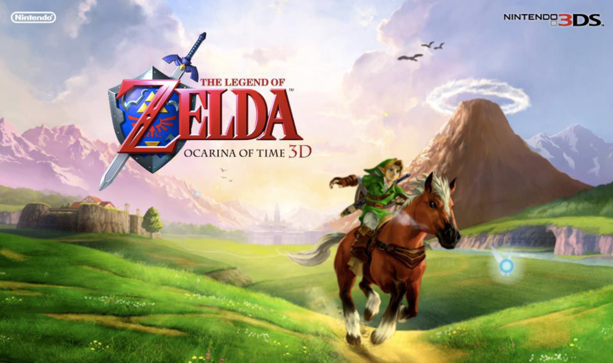

Personal Connections

The first game of the Legend of Zelda Series that I've ever played was The Legend of Zelda: Ocarina of Time. This game shaped much of my taste in videogames and the is the videogame I blame for not being able to enjoy any other heavily story driven game. This game set the bar for every that I've played since. This was my favourite game from my childhood.

The Legend of Zelda: Ocarina of Time was largely considered the unrivaled best in the series, however, as soon as Breath of The Wild came out, it blew everyones expectations out of the water. The graphics was predictably the best out of all zelda games. But the story is one that I at least believe is the best out of all Zelda games. It had a truly heart wrenching story that is better than anything else ive ever played. This is tough Competation for Ocarina of Time.Breath of the Wild is just different.
Breath of the Wild feels like it arrived fully formed from another dimension.
A dimension where video games evolved differently on an alternate timeline. Where RPGs aren't dependent on mission markers and laundry list fetch quests. Where open worlds aren't celebrated for their size and instead focus on in-the-moment experiences that spiral into spontaneous, weird emergent stories that are yours and yours alone.
A universe where exploration is a means to its own end, where meaningful encounters occur effortlessly, where there is a story around every corner.
A timeline where systems interplay in ways that encourage chaos. Or stillness. A world where you're accidentally riding a reluctant bear into a spontaneous wildfire one minute, then scrambling solo toward gorgeous vistas the next. A place where these transitions feel seamless.
Breath of the Wild was a game that felt traditional, but in the ways it wasn't it felt revolutionary. Breath of the Wild unraveled decades of open-world bullshit and began afresh like none of it existed. It was the most obvious thing you can imagine: an open-world game that focused almost exclusively on its open world. An intricate space designed, not to be catalogued or conquered, but explored and savored, complete with a cohesive set of intertwining game concepts that could be tinkered with but, unlike others, was somehow resistant to the breaks in logic that subvert regular video game experiences.
It is, almost certainly, one of the best video games ever made. It's certainly my own personal favorite.